Qu'est ce que l'épreuve E5 ?
L'épreuve E5 du BTS SIO, intitulée "Support et mise à disposition de services informatiques", vise à évaluer les compétences du candidat dans la gestion et l'assistance des services informatiques
Elle repose sur un oral de 40 minutes, durant lequel le candidat présente son parcours professionnel et ses réalisations en lien avec des compétences comme la gestion du patrimoine informatique, le support aux utilisateurs, le travail en mode projet et le développement de services en ligne.
L'épreuve s'appuie sur un dossier numérique contenant un portfolio, un tableau de synthèse des compétences mobilisées et les attestations de stage ou certificats de travail.
L'évaluation est réalisée par un jury composé d'un enseignant et d'un professionnel du secteur, qui apprécient la capacité du candidat à justifier ses compétences et à rendre compte de son travail en environnement professionnel.
Stage de Première Année : Bonifay
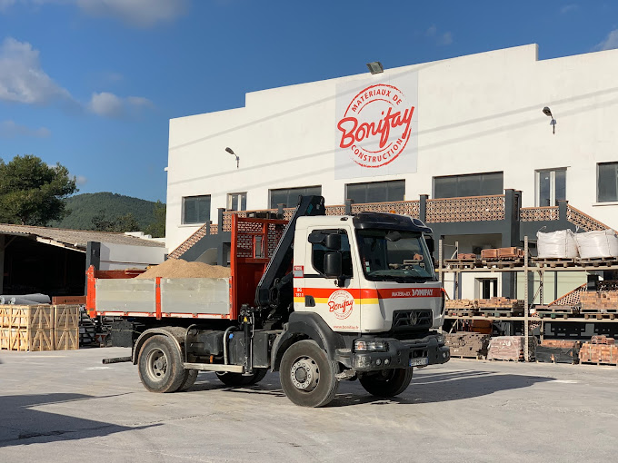
Présentation de l'entreprise
L'agence Bonifay de La Garde est l'un des établissements phares de la société Bonifay S.A.S., spécialisée dans le négoce de matériaux de construction. Créée en 1988, cette entreprise familiale fonctionne sous le statut de Société par Actions Simplifiée (SAS) avec un capital social de 5,3 millions d'euros. Elle emploie environ 400 collaborateurs à travers ses différentes agences, dont entre 100 et 199 salariés sur le site de La Garde.
L'agence propose une large gamme de produits et services destinés aux professionnels du bâtiment ainsi qu'aux particuliers, couvrant des domaines variés tels que le gros œuvre, le second œuvre, l'aménagement intérieur et extérieur, ainsi que le bricolage. Grâce à son expertise et à son implantation régionale, Bonifay s'impose comme un acteur majeur dans la distribution de matériaux de construction dans le Var.
Présentation des différents postes
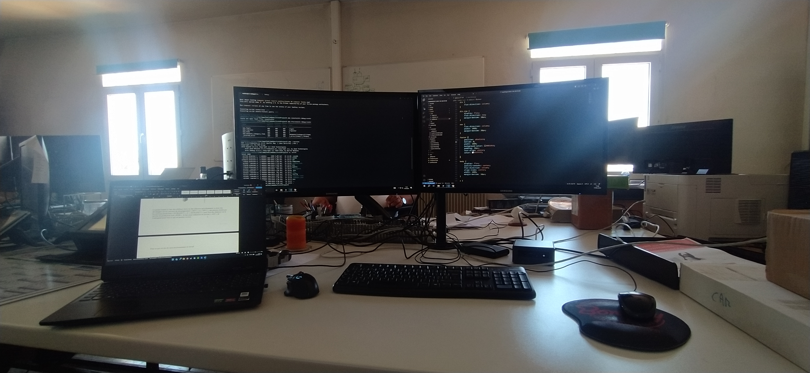
Présentation de mon espace de travail
Lors de mon stage, j'ai évolué dans un environnement confortable et bien équipé. Mon poste était doté d'une machine Linux Ubuntu avec interface graphique, sur laquelle je travaillais via une machine virtuelle Windows 10, le tout réparti sur deux écrans Full HD de 24 pouces.
L'ambiance de travail était conviviale, avec un espace commun comprenant une cuisine équipée, une machine à café, un réfrigérateur, un four, ainsi qu'une grande table centrale propice aux échanges et aux pauses-déjeuner en équipe. Un balcon attenant offrait également un cadre agréable pour se détendre entre deux sessions de travail.
Présentation des différentes Missions qui m'ont été données
Gérer le patrimoine informatique
Cette compétence est mobilisée ici car la création d'une application de vente nécessite la gestion et la structuration d'éléments techniques (hébergement, base de données, etc.).
Organiser son développement professionnel
La réalisation de ce projet a permis d'approfondir les connaissances en Symfony, ce qui participe directement à la progression professionnelle.
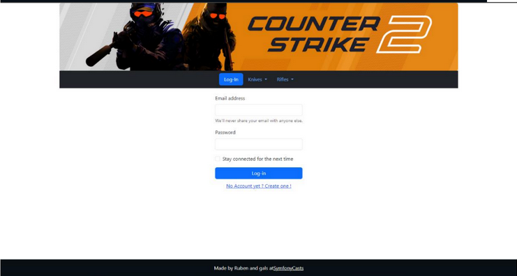
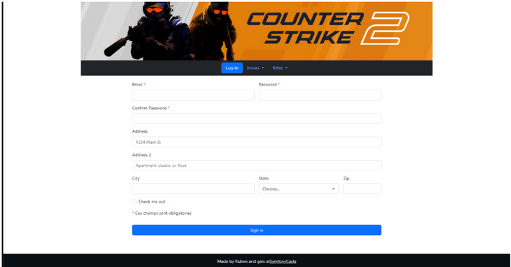
Gérer le patrimoine informatique
La compétence est mobilisée car schématiser les serveurs revient à gérer et représenter visuellement les ressources techniques.
Travailler en mode projet
Cette tâche a été réalisée de manière structurée, avec planification et organisation, typique d'une méthode de gestion de projet.
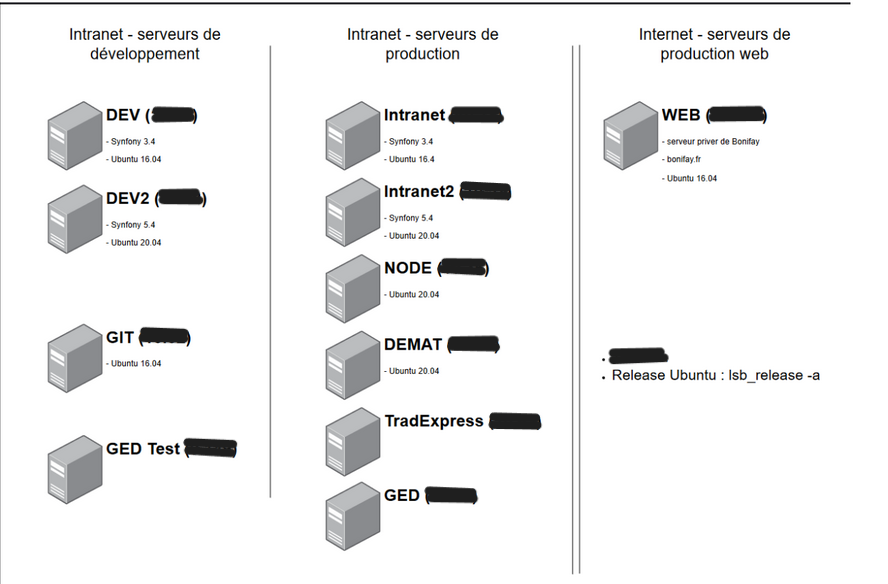
Gérer le patrimoine informatique
Cette compétence est mobilisée par un projet Symfony respectant les normes PSR/W3C, les conventions internes, avec habilitations, ressources recensées et sauvegardes.
Mettre à disposition des utilisateurs un service informatique
L'application étant destinée aux livreurs, elle constitue un service à usage professionnel devant répondre à des exigences d'utilisabilité et de fiabilité.
Organiser son développement professionnel
Ce projet a renforcé les compétences techniques du développeur, en particulier sur Symfony, Twig, et l'architecture MVC.
🚀 Projet : Application Mobile Web pour Chauffeurs/Livreurs - Bonifay
Contexte :
Durant mon stage chez Bonifay, une entreprise spécialisée dans le secteur du BTP,
j'ai contribué au développement
d'une application web mobile destinée aux chauffeurs-livreurs. Cette application
avait pour vocation de
simplifier la gestion quotidienne des tournées tout en fluidifiant la
communication entre les équipes terrain et l'entreprise.
Grâce à une interface intuitive accessible depuis leur smartphone, les chauffeurs pouvaient
visualiser leur prochaine livraison
avec l'ensemble des détails utiles (adresse, client, créneau horaire, etc.). Une fois la livraison
effectuée,
un simple clic permettait de la valider, déclenchant automatiquement l'affichage de la
suivante.
Ce fonctionnement assurait une continuité fluide et sans erreur dans l'exécution des tournées, en
supprimant tout besoin de ressaisie ou de manipulation technique.
🧠 Objectifs du projet
L'objectif principal de l'application était de permettre aux chauffeurs de :
- ✅ Accepter ou refuser une livraison directement via l'interface
- ✅ Signaler la fin d'une livraison et afficher automatiquement la suivante
- 🔄 Recevoir des mises à jour en temps réel (modification d'horaires, annulations, incidents, etc.)
Côté technique, plusieurs objectifs transverses étaient également visés :
- 🚀 Développer un système de push intelligent permettant l'enchaînement automatique des livraisons
- 🔐 Mettre en place une API REST sécurisée connectée à une base de données MySQL
- 🧾 Implémenter une authentification basée sur les cookies de session
💡 Schéma fonctionnel :
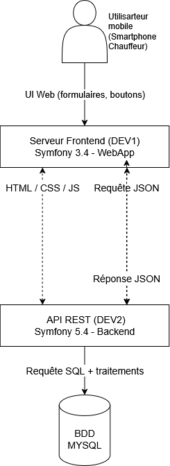
🛠️ Technologies utilisées
Le projet reposait sur une architecture répartie entre deux environnements de développement distincts :
- DEV1 : Environnement Frontend en Symfony 3.4
- DEV2 : Environnement Backend/API en Symfony 5.4
J'étais connecté simultanément aux deux serveurs via Visual Studio Code à l'aide d'une extension SSH. Cela me permettait de travailler directement sur les fichiers distants, avec une fluidité comparable à du développement local. Pour la gestion des terminaux et des logs serveur, j'utilisais également Tabby, un terminal performant et personnalisable.
Le socle technique de l'application incluait :
- Langages et Frameworks : PHP 7.4.3, Symfony (3.4 et 5.4), JavaScript, Bootstrap
- Base de données : MySQL, manipulée via PHPMyAdmin
- Gestion des dépendances : Composer 2.6.6
- Journalisation : Un système de debug log déja développer par l'entreprise a également été utilisé afin de suivre les événements critiques, erreurs et actions utilisateur pour faciliter le debugging et l'audit.
💡 Extrait du service de journalisation


📅 Déroulement du stage et réalisations clés
Durant le stage, j'ai développé et intégré plusieurs fonctionnalités :
🔸 Connexion et Accès aux données :
J'ai mis en place une connexion sécurisée aux serveurs via SSH, et développé plusieurs fonctions
PHP, notamment des fonctions de manipulation des données (création, lecture, mise à jour,
suppression) en utilisant l'interface PDO de PHP.
💡 Extrait de code :
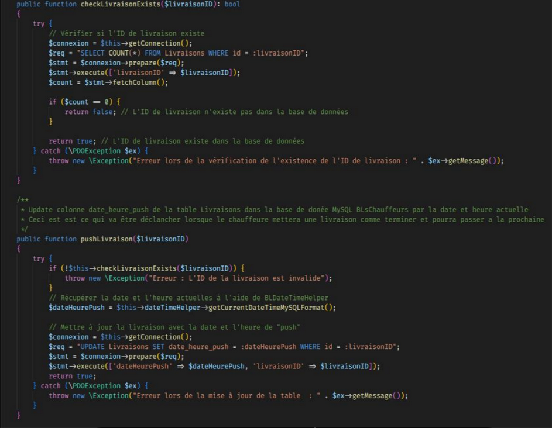
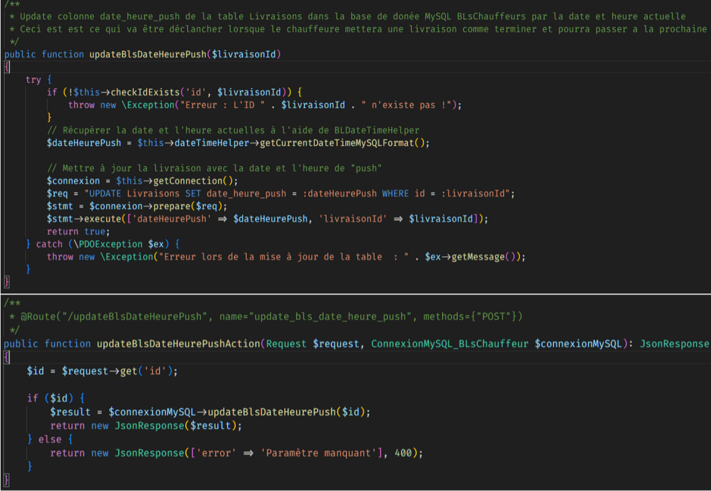
🔸 Fonctionnalités majeures implémentées :
- Bouton “Accepter livraison” : enregistrement d'un timestamp dans la base
- Bouton “Livraison terminée” : mise à jour de la colonne
date_heure_pushet passage automatique à la suivante - Système d'authentification sécurisée par token stocké en cookie
💡 Interface utilisateur :
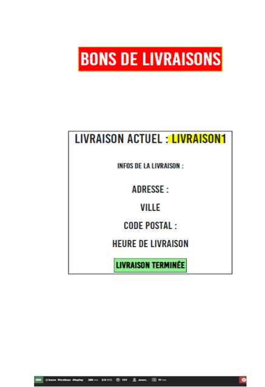
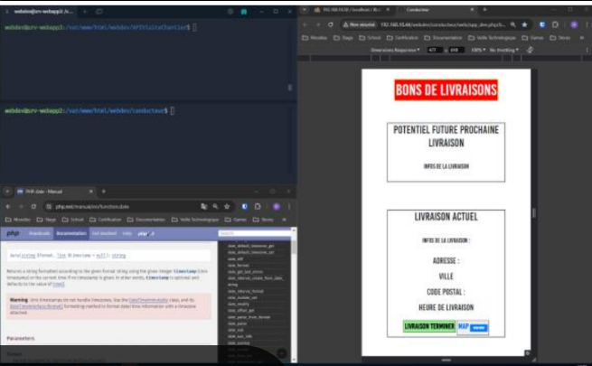
⚠️ Limitations et fin de projet
Malgré les avancées, certaines fonctionnalités n'ont pas pu être finalisées à temps :
- ❌ Le système de push intelligent est resté partiellement implémenté
- ❌ L'application ne supportait pas le temps réel (absence de jQuery ou AJAX)
- ❌ Le module de notifications n'a pas été intégré
- ❌ L'intégration d'une carte de suivi en temps réel type Waze/Google Maps n'a pas été réalisée
Stage de Deuxième Année : Etudes et Solutions
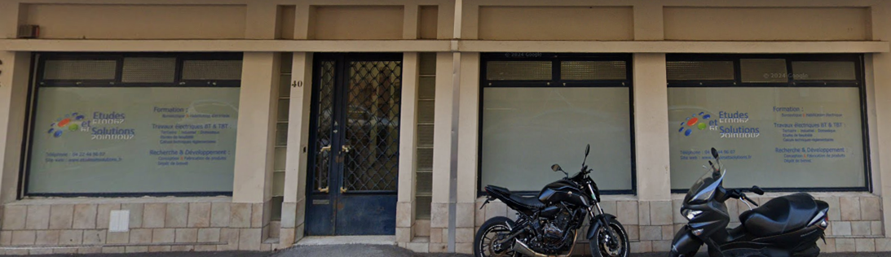
Présentation de l'entreprise
Basée à Toulon, Études et Solutions est une société par actions simplifiée (SAS) française spécialisée dans l'ingénierie et les études techniques. Fondée en août 2019, elle a été créée par M. Max Menini et M. Joël Queyrel, chacun détenant 50 % du capital social. À ce jour, l'entreprise ne compte aucun salarié déclaré.
Études et Solutions se concentre sur la conception, la fabrication et la commercialisation d'appareils électriques, électroniques et mécaniques. Elle intervient également dans le domaine de la propriété intellectuelle, en assurant la protection et l'exploitation de brevets, ainsi que dans la formation technique. Grâce à la complémentarité de ses fondateurs et à son approche innovante, la société accompagne ses partenaires dans la mise en œuvre de solutions techniques adaptées à leurs besoins.
Présentation des différents postes
Malgré une équipe réduite composée uniquement des deux fondateurs, Études et Solutions fonctionne efficacement grâce à leur polyvalence : chacun occupe plusieurs fonctions au sein de l'entreprise. L'accueil régulier de stagiaires vient également renforcer cette dynamique, en apportant un soutien concret aux projets en cours. Cela permet à la structure de rester agile tout en couvrant les besoins essentiels de l'activité, comme les postes suivants :

Présentation de mon espace de travail
Lors de mon stage chez la TPE Etudes et Solutions, j'étais installé dans un open space composé de quatre postes de travail, chacun équipé d'un ordinateur sous Windows 10 et d'un écran Full HD de 24 pouces. Nous avions également accès à la baie de brassage, comprenant deux switchs de 16 ports, que nous utilisions régulièrement pour effectuer différentes connexions, notamment pour les Raspberry Pi.
Une salle de réunion était à notre disposition, où nous échangions des idées sur les solutions potentielles du projet ou tout simplement pour partager nos pauses déjeuner. Un espace cuisine était également disponible, permettant de préparer ou de réchauffer nos repas du midi.
Présentation des différentes Missions qui m'ont été données
Gérer le patrimoine informatique
La conception du schéma réseau implique une compréhension et une gestion approfondie de l'infrastructure technique de l'entreprise.
Travailler en mode projet
L'étude et la conception ont été réalisées de manière méthodique, avec des phases d'analyse, de proposition et de validation.
Organiser son développement professionnel
Cette mission a renforcé mes compétences en architecture réseau et en sécurité informatique.
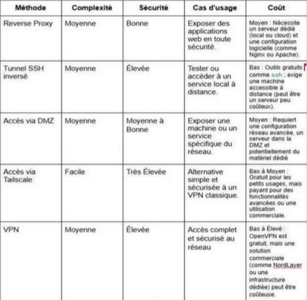
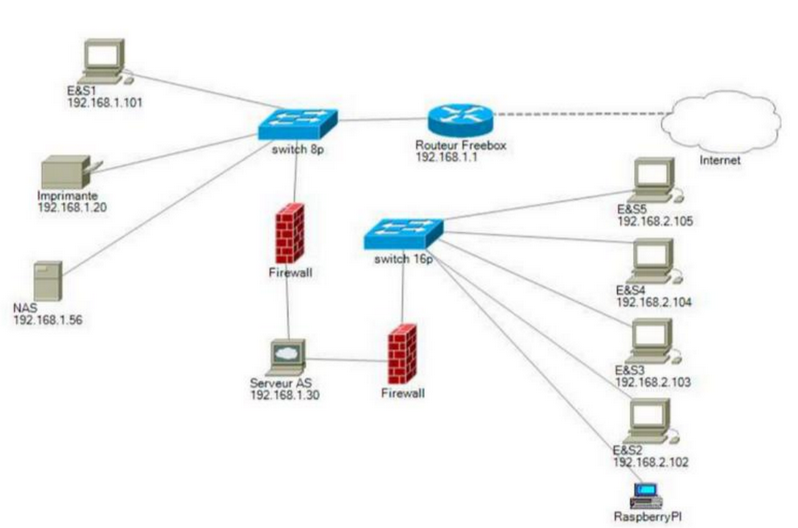
Gérer le patrimoine informatique
Installation et configuration d'un système d'exploitation spécialisé sur du matériel dédié.
Répondre aux incidents et aux demandes d'assistance et d'évolution
Résolution des problèmes techniques lors de l'installation et adaptation aux spécificités du matériel.
Organiser son développement professionnel
Acquisition de nouvelles compétences en systèmes embarqués et configuration réseau avancée.
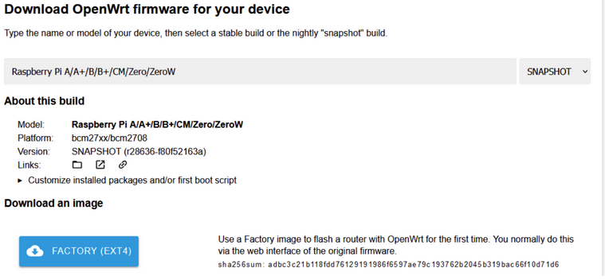
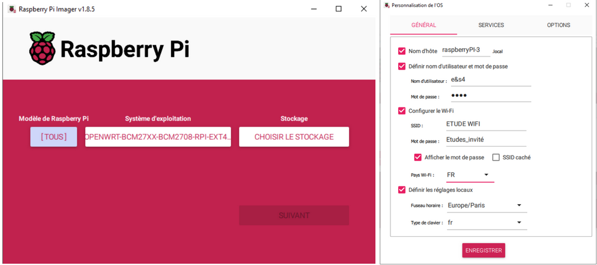
Gérer le patrimoine informatique
J'ai géré le matériel informatique (Raspberry Pi), y compris leur configuration réseau, le système d'exploitation et les services nécessaires à l'application.
Répondre aux incidents et aux demandes d'assistance et d'évolution
Des incidents sont survenus lors de l'installation ou du démarrage de certains services, que j'ai pu résoudre pour garantir un bon fonctionnement.
Travailler en mode projet
Le déploiement s'inscrivait dans un projet structuré avec des objectifs, une planification et une coordination d'équipe.
Mettre à disposition un service informatique
L'application a été rendue disponible sur le réseau grâce aux Raspberry Pi, assurant un accès fonctionnel pour les utilisateurs.
Organiser son développement professionnel
Cette tâche m'a permis de renforcer mes compétences en administration réseau et Linux sur Raspberry Pi, utiles pour mon évolution.
À l'origine, il s'agissait simplement d'un transfert via git clone sur le second Raspberry Pi, qui se trouvait sur un autre réseau, résultat de la segmentation réseau que nous avions réalisée lors d'une mission précédente. Avec mon binôme, nous avons assuré la préparation au déploiement, en adaptant le scanner pour qu'il fonctionne sur n'importe quel appareil et réseau, malgré les différences de modèle entre les Raspberry. Le déploiement complet, sous forme d'une image système du Raspberry fonctionnel, a malheureusement été effectué après mon départ.
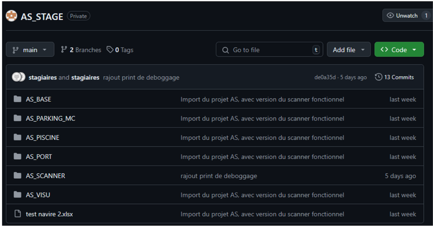
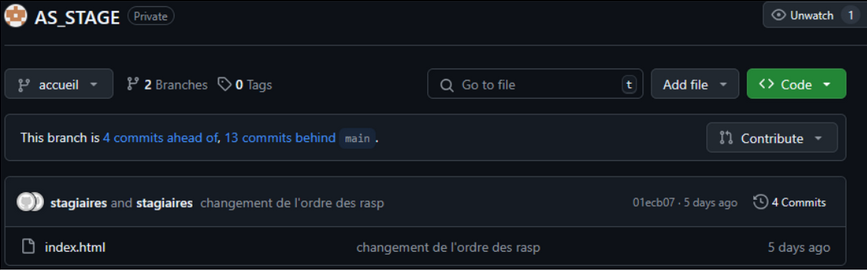
Gérer le patrimoine informatique
Cette compétence est mobilisée par le développement de scripts de démarrage automatique, garantissant la continuité du service et recensant les ressources numériques nécessaires à l'automatisation.
Répondre aux incidents et aux demandes d'assistance et d'évolution
Cette compétence est mobilisée par les scripts de démarrage automatique, qui réduisent les incidents et facilitent la gestion des demandes d'assistance liées aux services système.
Travailler en mode projet
Cette compétence est mobilisée par la planification et le développement des scripts, avec des indicateurs de suivi pour évaluer leur efficacité et ajuster le projet.
Mettre à disposition un service informatique
Cette compétence est mobilisée par les scripts de démarrage automatique, garantissant un service fiable et facilitant le déploiement du service.
Organiser son développement professionnel
Cette compétence est mobilisée par l'utilisation de veille technologique pour optimiser les scripts et développer des compétences professionnelles en automatisation.
Dans le cadre du projet, un script de démarrage automatique au format .bat a été développé afin de lancer automatiquement le serveur Django au démarrage des postes de travail. Ce script exécute la commande python manage.py runserver adresseIP:8500, permettant ainsi de démarrer le service sans intervention manuelle à chaque allumage. Cette automatisation facilite l'accès au projet et garantit un gain de temps pour les utilisateurs.
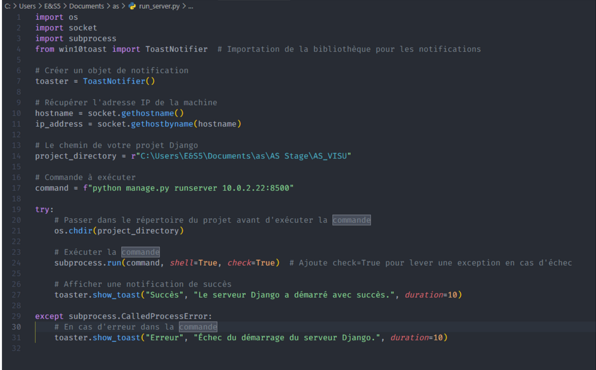
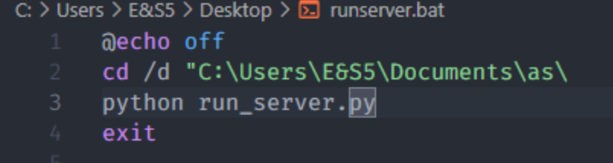
Gérer le patrimoine informatique
Cette compétence est mobilisée par le développement du scanner réseau, qui permet de recenser et identifier les ressources numériques connectées, contribuant à une meilleure gestion du parc informatique.
Répondre aux incidents et aux demandes d'assistance et d'évolution
Cette compétence est mobilisée par la mise en place de fonctionnalités de détection réseau, facilitant la collecte d'informations et la réponse aux problèmes liés aux connexions ou aux équipements réseau.
Travailler en mode projet
Cette compétence est mobilisée par l'analyse des besoins, la planification du développement du scanner et l'ajout progressif des fonctionnalités, selon les objectifs fixés en début de projet, ainsi que l'utilisation de Git pour le versionning.
Organiser son développement professionnel
Cette compétence est mobilisée par la réalisation de cette mission en utilisant la veille technologique pour découvrir des bibliothèques Python adaptées au scan réseau et approfondir mes compétences en framework Django.
🔧 Projet AS – Interface web embarquée pour la gestion réseau sur Raspberry Pi
Contexte : Projet mené en équipe de 4 stagiaires, répartis en 2 binômes. Chaque binôme disposait de son propre poste de travail et Raspberry Pi, configuré comme routeur grâce à OpenWrt. Pour assurer un environnement de travail isolé, nous avons commencé par segmenter le réseau local, créant deux sous-réseaux indépendants.
💡 Schèma rèseau :
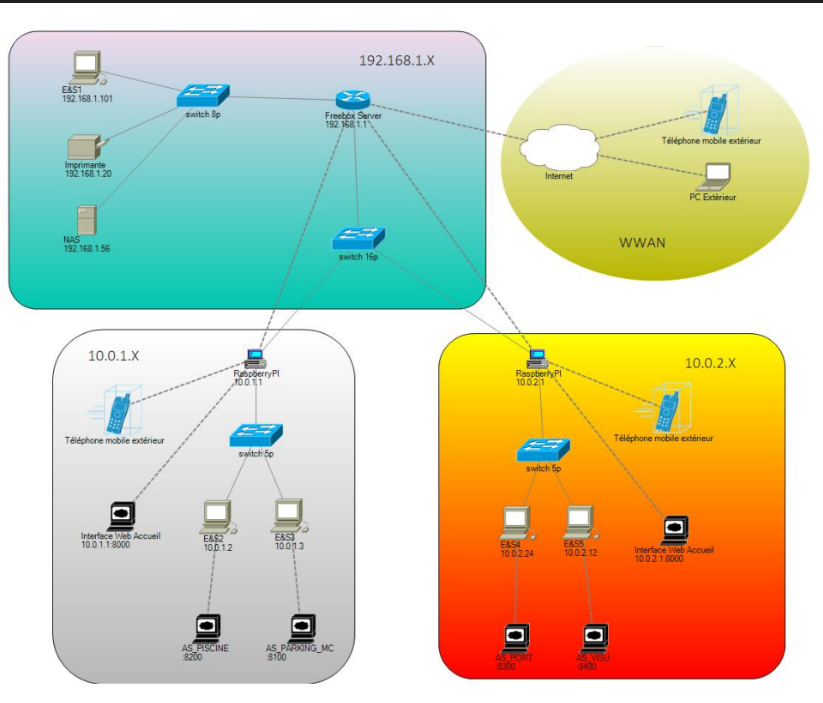
🎯 Objectif du projet
Créer une interface web en Django (Python) pour remplacer l'interface d'administration OpenWrt sur les Raspberry Pi, et y intégrer un scanner réseau interactif permettant de :
- Lister tous les appareils connectés en temps réel
- Afficher : nom, adresse IP, adresse MAC
- Proposer un accès direct à l'interface liée à chaque poste
💡 L'interface Créer :
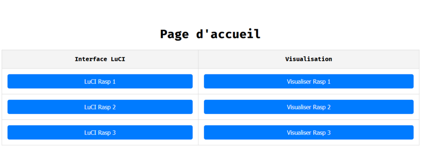
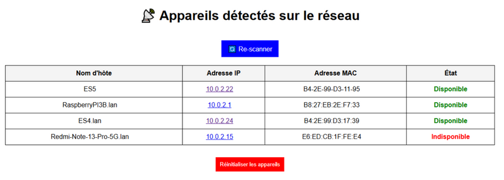
🧠 Gestion intelligente des appareils
Pour éviter que les appareils détectés apparaissent/disparaissent en boucle, chaque machine détectée pour la première fois était enregistrée dans une base de données SQLite. Ensuite, seul son état (connecté ou déconnecté) était mis à jour, assurant une interface stable et cliquable en permanence, même si un appareil devenait momentanément indisponible.
💡 Model SQLite
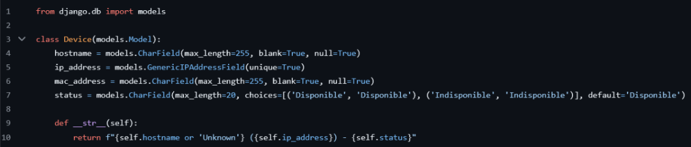
🔗 Intégration avec un projet existant
Chaque appareil détecté donnait accès à une interface Django dédiée à une zone spécifique, issue d'un ancien projet développé par des stagiaires de première année. Ce système permettait d'archiver automatiquement les bases de données, et de restaurer les dernières données disponibles en cas d'inaccessibilité d'une zone.


🌐 Portabilité et déploiement
- Développement conçu pour être compatible avec tous modèles de Raspberry
- Déploiement initial effectué via un simple
git clone - Déploiement final réalisé après notre départ, via image système prête à l'emploi du Raspberry configuré